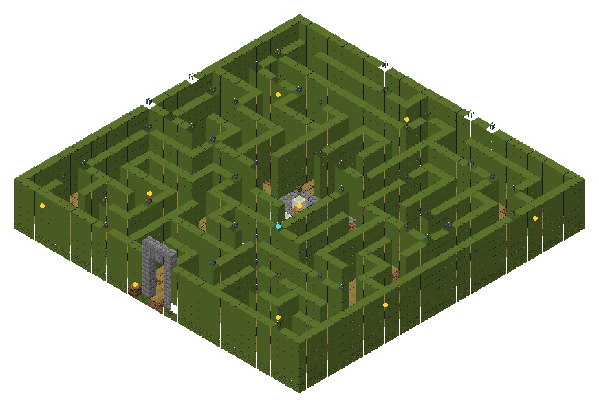
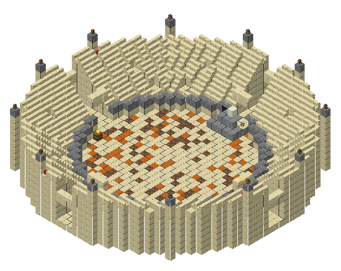
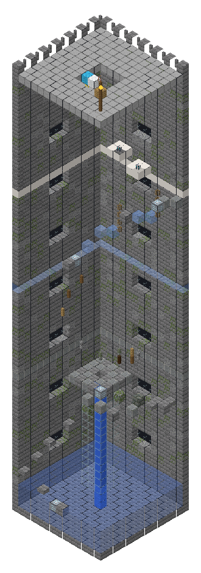
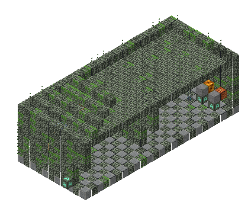
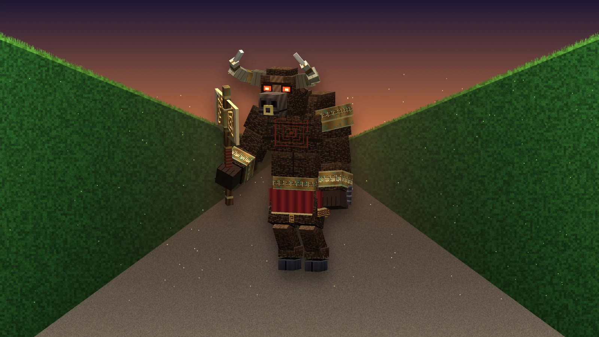
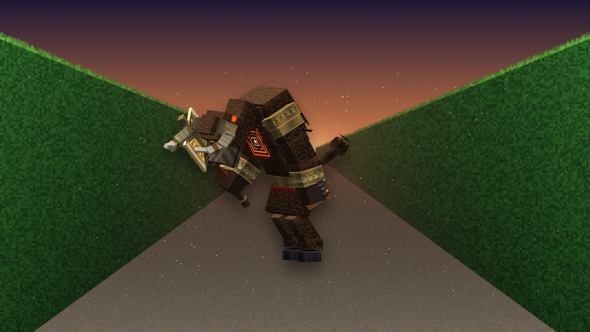
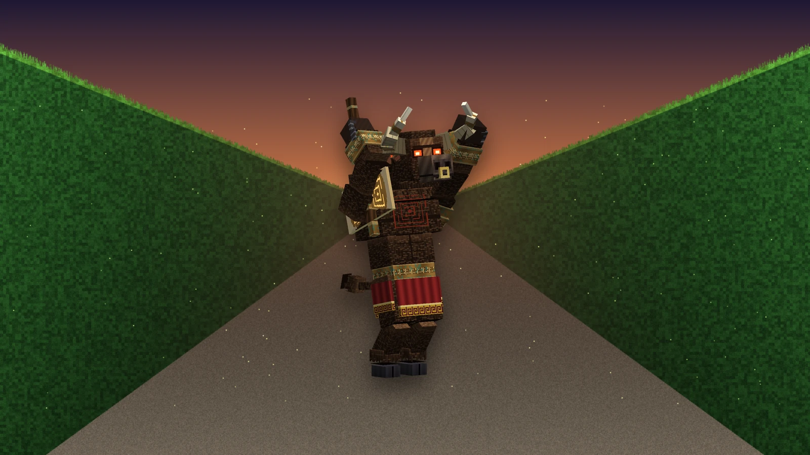
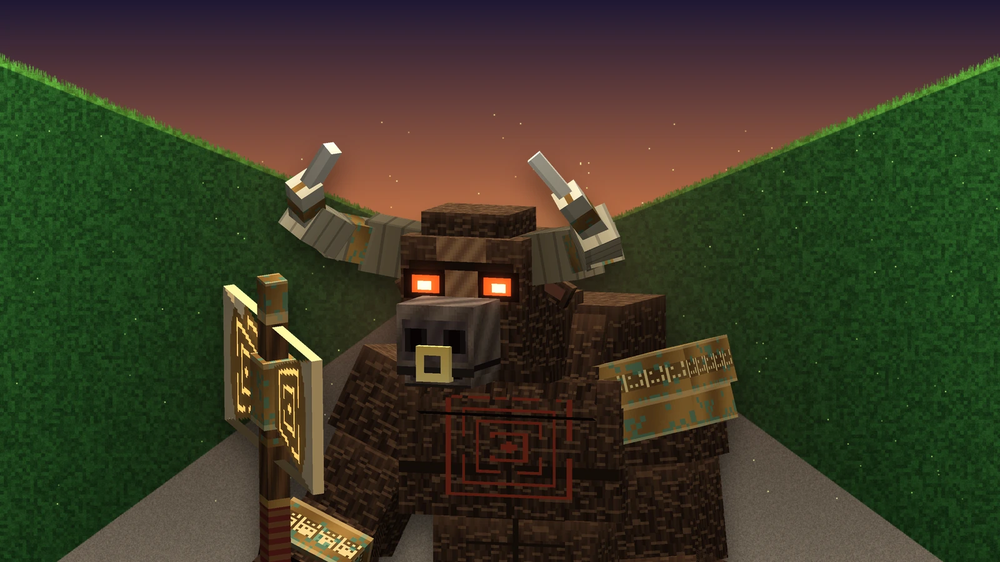

Défis rares
Les Épreuves
Quatre lieux faits pour être joués, rares : au plus un par carré de 1 600 blocs, sur une autre case que la merveille. Les trouver les inscrit dans l'Atlas avec leur règle ; chacune a son trésor et son progrès.

(agrandir l'image)Le Dédale des Anciens
Son cœur garde un trésor, et quelque chose de grand arpente ses allées. Nul ne bâtit par-dessus les haies.

(agrandir l'image)L'Arène des Champions
Sonnez le cor sur son estrade : cinq vagues, toujours plus dures, la dernière menée par un champion. Une fois par jour.

(agrandir l'image)La Tour des Vents
Touchez la pierre des vents à son pied : le chrono tourne. Marches, poteaux, glace et échelles, puis les vents eux-mêmes - et chaque pierre touchée vous rattrape si vous tombez.

(agrandir l'image)Le Temple des Énigmes
Les bougies de la fresque disent l'ordre. Pressez les quatre glyphes ainsi, et le caveau s'ouvre. Autrement, les gardiens s'éveillent.


| Épreuve | Où | Comment on la joue |
|---|---|---|
| Le Dédale des Anciens | plaines, forêts, taïgas, savanes, Sylve, Colosses | un labyrinthe de 40 × 40 aux haies incassables de 5 de haut — impossible d'y poser un bloc (hors créatif). Astérion, le Minotaure (160 PV) garde son cœur et vous chasse à l'odeur dans les allées : voir sa section. Caches et toiles dans les culs-de-sac, du fil à l'entrée. Abattu, il laisse des diamants, des pommes d'or et sa Corne (force II et vitesse 20 s, toutes les 3 min). |
| L'Arène des Champions | plaines, savanes, déserts, badlands, Colosses | sonnez le Cor sur l'estrade : cinq vagues sortent sur le sable (morts-vivants, brigands, illageois, raptors et scorpion, puis un Champion ravageur deux fois plus robuste). Barre de boss, titres entre les vagues, récompenses à chaque vague pour tous ceux sur le sable ; la cinquième donne diamants, totem et le Laurier du Champion (résistance, régénération, absorption). Une fois par jour par arène ; perdue si le sable reste vide 10 s. |
| La Tour des Vents | collines venteuses, prairies, bosquets, taïgas | une tour de 57 blocs, contre la montre : touchez la pierre des vents à son pied et le chrono tourne. Marches en spirale, couronne de poteaux, glace et échelles, puis des dalles qu'on n'atteint qu'en se laissant porter par une charge de vent lancée à ses pieds (la pierre du sanctuaire vous en confie trois). Chaque pierre touchée devient votre point de reprise : tombez dans le bassin, et les vents vous y ramènent ; une colonne de bulles remonte au premier palier. Chaque saut a été vérifié faisable. Record personnel, succès Léger comme l'air en moins de trois minutes sans chute ; au sommet : cloche, 4 émeraudes et un coffre (élytres possibles, charges de vent, diamants). |
| Le Temple des Énigmes | jungles, déserts, badlands, marais | dans le hall, une fresque montre les quatre glyphes, chacun au-dessus de 1 à 4 bougies : c'est l'ordre. Dans la salle des énigmes, pressez les boutons des glyphes dans cet ordre : chaque bon glyphe s'allume, une erreur réveille deux gardiens. Les quatre bons glyphes brisent les sceaux du caveau. |
Astérion, le Minotaure
Le gardien du Dédale. Un titan à tête de taureau de près de quatre blocs, le pelage sombre et hirsute d'un aurochs ; deux grandes cornes qui s'écartent puis se relèvent, cerclées de bronze, ivoire à la pointe ; un anneau d'or dans les naseaux ; des yeux comme des braises. Sur lui, le bronze de Cnossos - une épaulière, une ceinture et des bracelets ciselés du méandre du labyrinthe, verdis par le temps - et un pagne rouge ourlé d'or. Des chaînes brisées pendent à ses poignets : on l'avait enfermé. Dans son poing droit, le labrys, la double hache de Crète, le labyrinthe gravé et lumineux sur ses deux lames. Sur son poitrail, un labyrinthe peint à l'ocre.


(agrandir l'image)

(agrandir l'image) (agrandir l'image)
(agrandir l'image)

(agrandir l'image)

(agrandir l'image)Il n'a pas besoin de vous voir : il vous sent, à travers les haies, à quarante blocs, et descend les allées jusqu'à vous. Sa barre de boss n'apparaît qu'à ceux qui sont dans le labyrinthe avec lui, jaune puis rouge quand il entre en fureur.
| Attaque | Quand | Ce qui arrive |
|---|---|---|
| Le revers | de près | Le labrys part en arrière puis balaie tout devant lui : 14 dégâts (17 en fureur), et l'on est rejeté sur le côté. |
| Le fendoir | de près | La hache levée à deux mains puis abattue : 18 dégâts (22), et le sol se fend devant lui sur plusieurs blocs : 8 dégâts et Lenteur II à qui s'y trouve. |
| La charge | de loin, quand il vous voit | Il gratte le sol trois fois en soufflant de la vapeur - c'est le signal - puis fonce tête baissée, cornes en avant, dans l'allée : 16 dégâts (20) et l'on est projeté. Mais s'il rencontre une haie, ses cornes s'y plantent et il reste sonné trois secondes : chaque coup qu'il reçoit alors fait moitié plus de dégâts. |
| Le piétinement | quand on l'entoure | Un sabot abattu : le sol rejette tous ceux qui sont autour de lui (8, puis 10), ralentis. |
| Le mugissement | quand il vous sent, quand il vous perd, quand il entre en fureur | Tous ceux qui sont à 32 blocs se mettent à briller à travers les haies (8 s) ; ceux qui sont proches sont ralentis par la peur. |
Le labyrinthe est son arme et sa faiblesse. Tenez-vous dos à une haie, au bout d'une allée droite : quand il gratte le sol, écartez-vous au dernier moment, et frappez-le pendant qu'il est sonné. Sous la moitié de sa vie, le labyrinthe peint sur son poitrail s'embrase : il est plus rapide, frappe plus fort, et ses charges viennent par deux.
| Vie | Armure | Taille | Butin |
|---|---|---|---|
| 160 | 10 (robustesse 4) | 1,7 × 3,6 blocs | 4 diamants, 2 pommes d'or, la Corne du Minotaure |
Les chutes ne lui font rien, le feu à moitié, et aucun monstre ne peut le blesser ; ses coups de zone ne touchent jamais les autres monstres. Dans les labyrinthes générés avant cette version, le ravageur qui gardait le cœur devient Astérion la première fois qu'il est chargé, aussi blessé qu'il l'était. Un œuf d'apparition du Minotaure est dans l'onglet créatif.